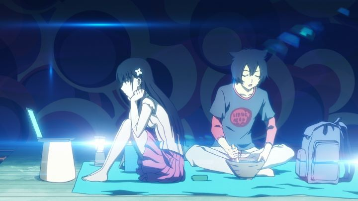

"Sankarea" (or "Sankarea - Undying Love," as it was titled for Western audiences) was a fairly popular manga series. At one time, it's cover(s) were advertised everywhere. It did receive an anime adaptation, but only for one season, and having been produced a few years before the manga finished, the anime doesn't really have an ending. The anime also became an infamous black-mark for North American distributor Funimation: fans quickly pointed out the episodes were censored, when an uncensored version was released on home video in Japan. This type of oversight is rare, but Funimation apologized (it turned out the Japanese creators gave the wrong version), gave refunds, and postponed the release until a proper uncut version could be produced, even with a discounted retail price.Was it worth the wait? For the perverts among you, there's a couple scenes with less mist hiding a naked woman or two. I don't remember seeing nipples. So much yelling over so little... this isn't just another fanservice anime, people! It's "Sankarea," a sweet romantic comedy between a shut-in boy and the corpse of a cute female classmate! Yep, romance can occur between anything in anime, even a zombie. Chihiro is the boy in question, and he has an unhealthy obsession with the undead, being both a fan of zombie movies, and believing he might be able to resurrect a real corpse himself. He emotionally attempts this on his deceased pet cat, seemingly to no effect. Meanwhile, he notices a girl from his class (Rea Sanka) quietly standing alone in the rain near a well each night; whatever the reason, she tries to run away from home and commit suicide. The suicide backfires thanks to Chihiro's potion, bringing her (and the cat) back to life. The lucky boy has a new zombie girlfriend now! And Rea doesn't mind, making use of her new-found freedom away from her parents and school life, trying to deal with her decaying flesh while her parents assume her to be dead (and when finding out otherwise, seek to take her back).I was more impressed with the production of "Sankarea" than I thought I'd be, for having a strong sense of identity and confidence. This shows in its story, visuals, etc. This doesn't mean everything is great, but just "really good." The story, despite its likable characters and dramatic revelations, probably suffers the most by not having an ending (concluding with the omninous realization about zombies typically eating humans). The manga did finish, so a second season could help wrap things, but no such project came about. The romance aspect also doesn't go very far, although it is a sweet relationship in its limited state. Ignoring how Chihiro has a fetish for dead bodies. And ignoring Chihiro's cousin, Ranko, who has an obvious crush on her relative. Hey, love between cousins in Japan isn't so unusual. And what little fanservice at work is typically at her expense, and her tomboy personality makes her a nice diversion for the viewer. Visually, sharp outlines and heavy emphasis on flowers helps define "Sankarea"'s distinct tone. The animation isn't particularly outstanding, but fair enough. The music also sets that tone properly, ranging from horror, romance and comedy on a dime. The acting is pretty good for the English dub.I still recommend "Dusk Maiden of Amnesia" as the go-to anime about a high-school love that crosses beyond the grave. But "Sankarea - Undying Love" is a solid alternative, and a nice romance story for a viewer to sink their teeth into. There isn't that much meat, but it'll satisfy your craving. For now.
- "Ani" More reviews can be found at : https://2danicritic.github.io/ Previous review: review_Samurai_Champloo Next review: review_Satellite_Girl_and_Milk_Cow